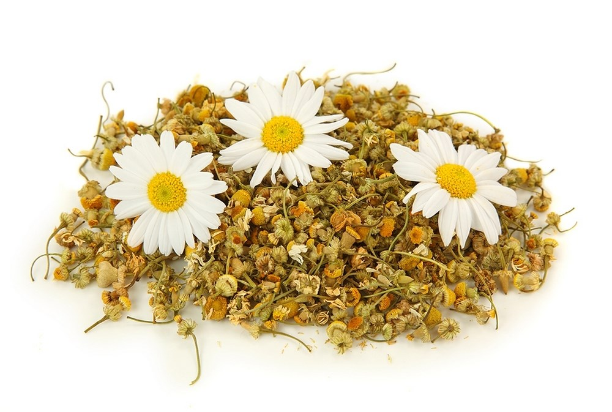

Ромашка, польза, приготовление и применение
Ромашка аптечная – наиболее популярный фитокомпонент любой домашней аптечки. С ее помощью можно решить большое количество проблем со здоровьем. Это не только профилактическое средство, но и лечебное. В домашних условиях из ромашки готовят отвары, настои и настойки, применяя их для примочек, компрессов, полоскания горла и купания, паровых ванночек. Часто ее принимают внутрь в виде ароматного чая, доставляющего вкусовое удовольствие и приносящего пользу организму.